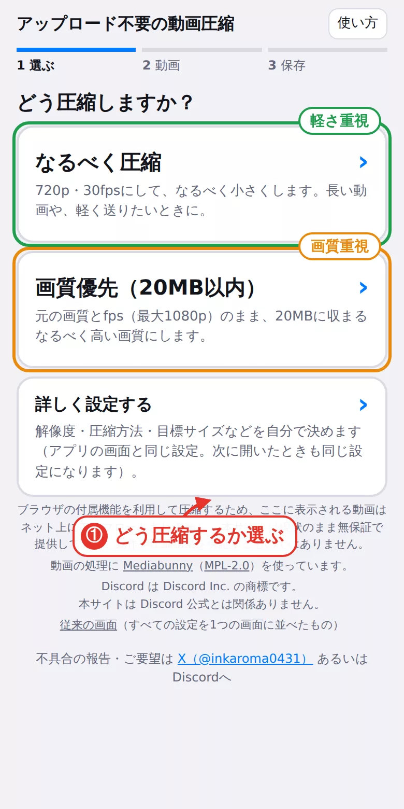
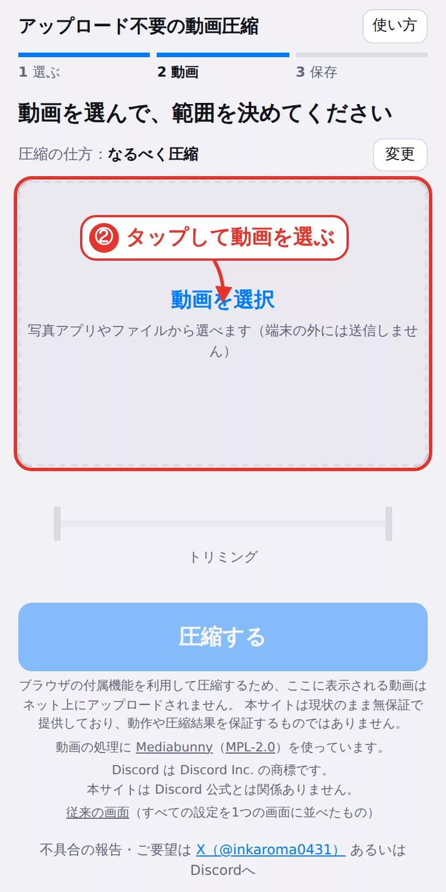
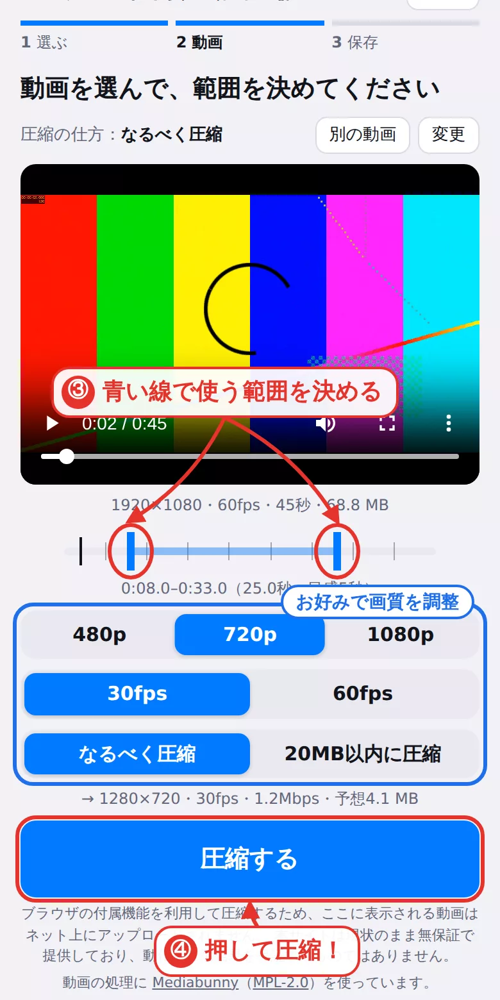
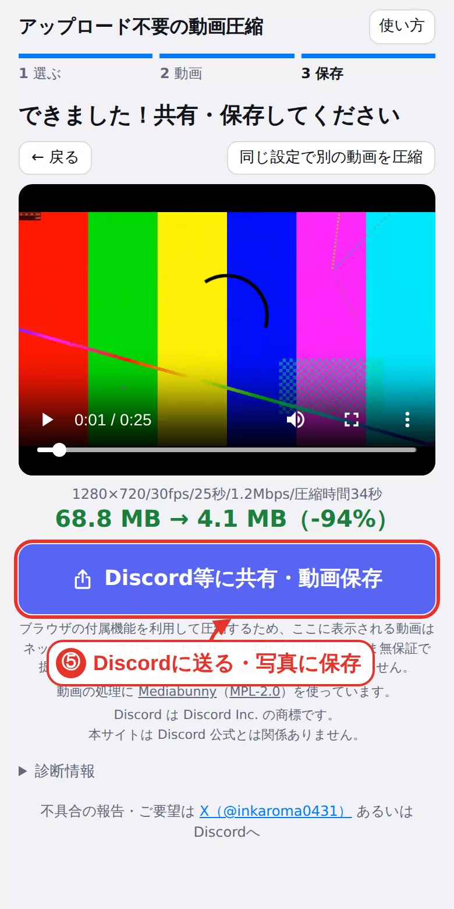

iPhoneのショートカットを併用した使い方
ショートカット機能を利用して、素早く圧縮→共有する方法を紹介しています。
（iPhone限定）
別のページで開く
Q
Q. 無料ですか？
A. はい、無料です。登録不要で、透かしや回数の制限もありません。動画はアップロードされず、この端末の中だけで処理します。
2026年9月現在、広告も付けていません。（利用者が多くなったら検討させてもらうよ！）
Q
Q. 動画や個人情報は送られますか？
A. 動画は送りません。圧縮はこの端末の中だけで行います。設定もこの端末のブラウザ内に保存します。
ページを開くときは、ほかのサイトと同じく、配信元（Cloudflare）がIPアドレスなどを扱います。アクセス解析や広告は入れていません。
※共有と診断情報の送信は、あなたが操作したときだけです。
Q
Q. このアプリを広めてもいい？
A. 大変ありがたいのですが、なるべく少人数の場で共有してください。類似Webサイトに喧嘩売るつもりはないので...
Q
Q. どのスマホで使えますか？
iPhone：iOS 16.4以降（iPhone 8以降）。Safari以外のブラウザでも使えます。
Android：Android 10以降の最新のChrome。Firefoxは非対応です。
※iOS 26より前は、AAC以外の音声は消えます（iPhone・Switchの動画はAACなので問題ありません）。
Q
Q. 他のWeb圧縮サイトとの違いは？
A. 圧縮に、ブラウザにもともと入っている動画の機能を使います。大きな圧縮ソフトをダウンロードしないので、ページが軽く、すぐに圧縮を始められます。
その代わり、ブラウザや端末によっては、対応していない動画があったり、動かなかったりすることがあります。
Q
Q. どんなファイルに対応していますか？
入力：MP4・MOV（iPhoneやSwitchの動画など）。ほかの形式も、ブラウザで再生できれば使えることがあります。
出力：MP4（映像H.264・音声AAC）。Discordやほとんどの端末でそのまま再生できます。
※「画質優先（20MB以内）」のとき、最初から20MB以下の動画は、元のファイルのまま渡します（位置情報付きの動画は除く）。
Q
Q. iPhoneの60fps・HDR動画は？
A. 写真アプリから選ぶと、iPhoneが自動で変換するため、30fps・HDRなしになります。
60fpsのまま使うには：写真アプリの共有から「"ファイル"に保存」し、「ファイルを選択」から選びます。圧縮の仕方は「画質優先（20MB以内）」を選ぶか、「詳しく設定する」で「60fpsの動画は30fpsにする」をオフにします。
※どちらの場合も、圧縮後はHDRなしになります。
Q
Q. 何分の動画まで20MBに入りますか？
A. 初期設定では、720pで約1分56秒、1080pで約54秒までが目安です（音声ありの場合）。
長いときは、青い線で使う範囲を短くするか、「なるべく圧縮」（720p）を選んでください。入らない長さのときは、何秒までなら入るかが画面に出ます。
Q
Q. 圧縮中に他のアプリを開いてもいいですか？
A. 圧縮が終わるまで、この画面を表示したまま待ってください。
他のアプリに切り替えたり、画面をロックしたりすると、圧縮が止まることがあります。そのときは、この画面に戻ると最初からやり直します。
Q
Q. ホーム画面に追加できますか？
A. はい。アプリのように開けて、一度開いたあとはネットにつながっていなくても使えます。
iPhone：共有ボタン →「ホーム画面に追加」
Android：Chromeのメニュー（︙）→「ホーム画面に追加」
Q
Q. うまく動かないときは？
A. まず、ページを開き直してください。
直らないときは、画面の下の「診断情報」をコピーして、X（@inkaroma0431）かDiscordに送ってください（動画やファイル名は含みません）。
※Googleフォトの、端末に保存されていない大きい動画は読み込めないことがあります。先に端末に保存してから選んでください。